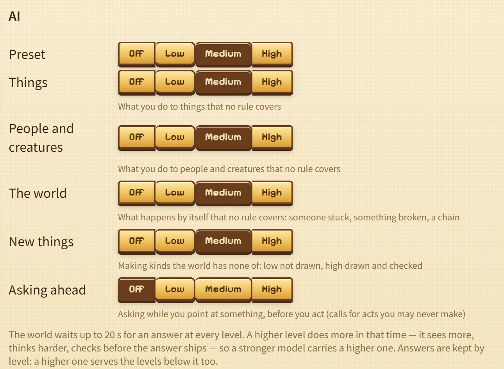

Ask a pixel world model to pour water on a campfire and it will mostly draw a puff of steam and call that the effect. There is another problem. Look away for a moment and look back, and the whole scene may have changed. It does not hold the state, and it cannot keep a continuous process going.
A traditional game is different. Pour water on the fire and it goes out, whoever is playing, however long you wait. Same result every time. Unless the person who made the game never wrote the rule “water puts out fire.” Then you can pour all you want and the fire does not react.
OpenWorld is us trying to have both. We want a world that stays put, with rules you can trust, the way a real game does, so you can actually role-play in it. We also want it to catch the strange things players try, the ones the authors never thought of.
So we fix the world’s basic state and the core rules in code. After that, if the code does not cover a case, or nobody wrote it ahead of time, a model writes the rule on the spot. It writes it once. Everyone plays with it after that.
This post is about how that works, and what we expect from here.
01The two roads we already had
An open world, for us, means you can do something nobody planned, and the world gives you an answer that holds together. There are two ways people have been going after that. Each one is strong exactly where the other is weak.
One way is learned world models: Genie, GameNGen, Oasis, and what came after them. They generate the picture frame by frame from what you do, and they will take any input, so in that sense they are open. The world only lives in pixels and a short window, though. GameNGen remembers about three seconds. Genie keeps sixteen frames. Genie 3’s visual memory tops out around a minute. Stay with something for longer than that and you come back to a place that has already changed. Add the cost of running the model, and it is hard to see this as a game people pay to play. You get demos and papers.
The other way is the traditional game, which is what studios have been making all along. Dwarf Fortress, the Elder Scrolls, the simulation in Zelda: Breath of the Wild: a lot of space, state that sticks, cause and effect that stay consistent, and almost nothing to run. Closed, though. If the designers did not think of an interaction and write it down, it does not happen.
02We think openness is a sparse problem
The starting point is simple. Open does not mean generating everything as you go. What a player can try looks infinite, but the interactions that actually come up, the interesting ones, sit in a long tail. Solve a situation once and the next time it should just run. The model can also look at what people keep doing and improve along that trail. In a sense that is recursive.
So you only need the open part the first time a situation comes up. After that, code is the better place for it: exact, persistent, something you can compose, something you can read, and free to run again.
A few working ideas follow from that:
Code still simulates everything, every frame. People go about their day. Fire runs along dry grass and rain puts it out. The story stays on its track.
The model writes code only when it has to, when the world hits a gap in the rules. And what it writes stays. It goes into a rule library every player shares, so a special situation is paid for once.
03A rule is what you get when things interact
In this world, change comes from events. What an event does is decided by the rules of the thing it happens to. A campfire has its own rules for what rain does. A slime has its own rules for what fire does. A rule can read anything in the world, but it can only change the thing it belongs to. To affect something else, it sends that thing an event, and the other thing answers with its own rules.
Rules should be about the groups we already use — types, tags, and statuses — not one particular object. Not one special slime, and not a bed that only exists in one scene. Write the rule and every thing of that kind gets it. The events themselves come from a fixed, limited set: the player doing something, a hit from outside, contact, a bump, time passing, a number crossing a line, coming into view, getting stuck, taking damage.
So a rule is basically a tree of conditions, and the result usually sits on a leaf. Some leaves we leave blank on purpose. We have not said yet what this thing does when that condition hits. A fire slime that gets burned. A player who decides an axe should pry a winch. Someone trying to hand a rope to a wolf. That is a lot of room we did not have to fill in ahead of time.
04We might be looking at Doctor Strange’s 14 million futures
Everything has a nature of its own, so nothing happens on its own. Lightning hits dead wood and it burns. Rain falls and the campfire goes out. Someone steals under cover of the storm, and a bounty goes up around the Ford. Each thing that happens stirs the people and objects nearby, and that stirs more. The futures do not all come out the same. That is the appeal of an open world.
This is also why the model has to answer with a rule, not a picture. A rule can sit in the logic that is already running. Once the ferry keeper learns to stay by the fire when she is stuck in the rain, the fire, the rain, and everything around her keep going as they did.
05When we reach the far side
When an event lands on a blank branch, we do not want the engine to freeze the whole world. We pause only the thing that was hit. Everything else keeps moving. Then the engine asks the model. The request carries the event, the path it took through the rule tree, everyone involved and what is around them, and a note on what a rule in that spot is allowed to say.
The model looks first at natures the world already has: the types on the event, then the catalogue of creatures and objects. If nothing fits, it adds a new kind, and a small picture of it. What comes back is a rule for that type, written into the blank.
The engine does not trust the new rule on arrival. It checks the format and the references, and that the rule only changes the thing it belongs to. It replays the triggering event in a sandbox. Then a checker pokes at it, looking for farms, infinite loops, and chains that fall over. The check passes only if the sandbox can show the difference: it happens with the rule, and it stops when you take the rule out. Then it goes into the library. Some rules we wrote as standing orders, and the engine cannot change those either. A game still needs a floor. Open does not mean anything goes. Freedom is not a blank check.
Right now a request is about ten seconds and about five cents, and you do not pay that forever. The library is shared. The next player who hits the same situation just runs it as ordinary code. Players can also turn the model up or down by kind of interaction, from off to a lot.

06A thousand maps, and what comes next
Because a frame does not need an extra video model in the render, the world can be as big as the content allows.
OpenWorld currently has 1,024 maps, from towns and villages to the rooms behind their doors; 1,654 people in 780 households, each with their own look and their own day, and 40,562 items of 1,013 kinds. Scenes the player has left do not have to keep running at full cost. When they come back, we write down what changed in the meantime. Cheap, and it works.
We hope the modder can become more automated: as the world grows, it changes itself, remembers what it has seen, writes its own skills, and revises how it works, and so improves itself recursively. That may be the furthest an open world goes.
Cite
@misc{openworld2026,
title = {OpenWorld: A Large Symbolic World},
author = {{OpenWorld Team}},
year = {2026},
howpublished = {\url{https://sihanxu.me/openworld/}}
}